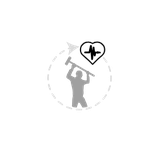
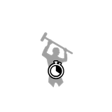
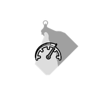
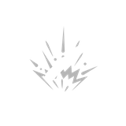

Primary augments

 Acidic
Acidic Adhesive Rounds
Adhesive Rounds EMP DetonationFinal Round
EMP DetonationFinal Round Health Stealing
Health Stealing Machine Disarmer
Machine Disarmer Prone Specialization
Prone Specialization Rapid Reload
Rapid Reload Scorching
Scorching Sharpshooter
Sharpshooter Small Fryer
Small Fryer Structure Destructor
Structure Destructor Titan TopplerTrick Shot Master
Titan TopplerTrick Shot Master Unstoppable Shells
Unstoppable Shells Uranium Infused
Uranium InfusedSupport augments
 Crouching Tiger
Crouching Tiger
Flurry of Blows Hip Shooter
Hip Shooter Hit and Run
Hit and Run Oversized Magazine
Oversized Magazine
Power Attacker Quick Learner
Quick Learner Scope Scout
Scope Scout Skilled Spotter
Skilled Spotter Slow and Steady
Slow and Steady Sound Muffling
Sound Muffling Stabilization
StabilizationAugment slotsby weapon quality
How many augments a weapon takes depends only on its quality. Worn and Good (2 and 3 crown) weapons have one Primary slot; Exceptional and Special (4 and 5 crown) weapons have a Primary and a Support slot; Dilapidated and experimental weapons have none. A weapon never takes two augments of the same group.
| Weapon quality | Primary slot | Support slot | Augments |
|---|---|---|---|
 Dilapidated Dilapidated | – | – | 0 |
 Worn Worn | ✓ | – | 1 |
 Good Good | ✓ | – | 1 |
 Exceptional Exceptional | ✓ | ✓ | 2 |
 Special Special | ✓ | ✓ | 2 |
 Experimental Experimental | – | – | 0 |
Research and tiers
Every augment has one research counter (the game keeps it with your currencies). Doing the task raises the counter, and when it reaches a tier's threshold that tier is researched. The counter is shared by the three tiers: an augment with thresholds 50 / 200 / 1,000 needs 1,000 in total for Gold, not 1,250. It stops at the Gold value. The task text in the Research menu always names the next threshold, so the number you see changes as you go.
Finishing a tier's research is not quite the end: you then unlock that tier's augmentation design at a crafting station, and from then on can put the augment on your weapons. Unlocked designs are stored in your profile (not in one character), so they count for every character. Each tier is a separate item with its own icon frame:
 Bronze
Bronze SilverGold
SilverGold- Bronze from the start (6): EMP Detonation, Sharpshooter, Small Fryer, Crouching Tiger, Quick Learner, Skilled Spotter. Their Bronze threshold is 0, so you can make the Bronze design straight away.
- Bronze after one kill (2): Final Round (Destroy a Vulture.); Rapid Reload (Destroy a Reaper.)
- Biggest number: Hit and Run Gold, “Sprint for 400,000 meters.” That is 400 km.
All augments28 augments
The descriptions are the game's own. Bronze / Silver / Gold are the research counter values that unlock each tier (“start” = unlocked from the beginning); the full task wording is in the next table. “Weapons” counts the weapons the augment fits at some quality, out of 38.
| Augment | Group | What it does | Bronze | Silver | Gold | Weapons | Restriction | |
|---|---|---|---|---|---|---|---|---|
| Acidic | Primary | Deal much more damage to armor, but less when hitting anything else. | 50 | 200 | 1,000 | 38 | – |
| Adhesive Rounds | Primary | Hitting a machine slows it down. Hitting it again refreshes the duration. | 50 | 200 | 1,000 | 38 | – |
| EMP Detonation | Primary | When destroying a component, it has a chance to trigger an electromagnetic pulse, disabling the machine temporarily. | start | 50 | 150 | 38 | – |
| Final Round | Primary | The final bullet of each magazine deals additional damage. | 1 | 3 | 10 | 6 | Only handguns can use this augmentation. |
| Health Stealing | Primary | Heal for a portion of damage dealt. | 50 | 200 | 750 | 38 | – |
| Machine Disarmer | Primary | Deal more damage when hitting firearms mounted on machines. | 20 | 100 | 500 | 37 | – |
| Prone Specialization | Primary | You can shoot more accurately and with less recoil while prone. | 5 | 50 | 200 | 35 | Melee weapons cannot use this augmentation. |
| Rapid Reload | Primary | After destroying a machine, temporarily speeds up how fast you can reload. | 1 | 3 | 10 | 35 | Melee weapons cannot use this augmentation. |
| Scorching | Primary | Deal more damage when hitting components, but less when hitting anything else. | 50 | 200 | 1,000 | 33 | Explosive weapons cannot use this augmentation. |
| Sharpshooter | Primary | Deals more damage hitting components at long range, but less damage at close range. | start | 100 | 500 | 30 | Melee weapons and explosive weapons cannot use this augmentation. |
| Small Fryer | Primary | Deal more damage when hitting Runners, Ticks and Lynxes. | start | 200 | 1,000 | 38 | – |
| Structure Destructor | Primary | Deal more damage to structures. | 5 | 50 | 150 | 38 | – |
| Titan Toppler | Primary | Deal more damage when hitting Harvesters, Tanks, Wolves, Firebirds, Reapers and Vultures. | 5 | 50 | 250 | 38 | – |
| Trick Shot Master | Primary | Has more accuracy and deals more damage when fired while you are in the air. | 3 | 20 | 100 | 6 | Only shotguns and melee weapons can use this augmentation. |
| Unstoppable Shells | Primary | Your bullets can pierce through machines and walls, but damage dealt is reduced after each penetration. | 3 | 40 | 150 | 30 | Melee weapons and explosive weapons cannot use this augmentation. |
| Uranium Infused | Primary | When destroying a component, temporarily overload a machine's threat-identifying circuits. | 50 | 200 | 1,000 | 38 | – |
| Crouching Tiger | Support | Increases your accuracy while crouching. | start | 15 | 50 | 35 | Melee weapons cannot use this augmentation. |
| Flurry of Blows | Support | Reduces the stamina cost of attacking. | 3 | 20 | 80 | 3 | Only melee weapons can use this augmentation. |
| Hip Shooter | Support | Increases accuracy and reduces recoil when shooting without aiming down the sights. | 3 | 10 | 40 | 35 | Melee weapons cannot use this augmentation. |
| Hit and Run | Support | Reduces the stamina cost of sprinting. | 25,000 | 100,000 | 400,000 | 38 | – |
| Oversized Magazine | Support | Increases the magazine size of the weapon, but increases recoil. | 20 | 100 | 500 | 31 | Melee weapons and explosive weapons cannot use this augmentation. |
| Power Attacker | Support | Speeds up the rate at which you can charge up a charge attack. | 10 | 50 | 200 | 3 | Only melee weapons can use this augmentation. |
| Quick Learner | Support | Increases XP earned from destroying or escaping machines. | start | 10 | 20 | 38 | – |
| Scope Scout | Support | Marks machines when viewing them through a scope. | 5 | 20 | 100 | 24 | Only weapons that can have a scope attached can use this augmentation. |
| Skilled Spotter | Support | Marks machines when destroying a component. | start | 50 | 200 | 38 | – |
| Slow and Steady | Support | Increases accuracy, but reduces movement speed. | 5 | 20 | 75 | 35 | Melee weapons cannot use this augmentation. |
| Sound Muffling | Support | Reduces the sound you make while carrying this weapon. | 10 | 35 | 120 | 38 | – |
| Stabilization | Support | Significantly reduces recoil, but reduces damage dealt. | 10 | 50 | 200 | 35 | Melee weapons cannot use this augmentation. |
Research tasks
The task as the game words it, with N standing for the number in the Research menu, and the value of N for each tier (“start” = researched from the beginning). Where a target is 1 the game uses the singular (“Destroy a Vulture.”); hover a number for the exact text.
| Augment | Research task | Bronze | Silver | Gold | |
|---|---|---|---|---|---|
| Acidic | Hit a machine with Corrosive Ammo N times. | 50 | 200 | 1,000 |
| Adhesive Rounds | Hit a machine with a Tar Ammo N times. | 50 | 200 | 1,000 |
| EMP Detonation | Disable N machines with EMPs. | start | 50 | 150 |
| Final Round | Destroy N Vultures. | 1 | 3 | 10 |
| Health Stealing | Use N First Aid Kits. | 50 | 200 | 750 |
| Machine Disarmer | Destroy N firearms mounted on machines. | 20 | 100 | 500 |
| Prone Specialization | Destroy N machines while prone. | 5 | 50 | 200 |
| Rapid Reload | Destroy N Reapers. | 1 | 3 | 10 |
| Scorching | Hit a machine with HEAT Ammo N times. | 50 | 200 | 1,000 |
| Sharpshooter | Hit a machine from more than 75 meters away N times. | start | 100 | 500 |
| Small Fryer | Destroy N Runners, Ticks or Lynxes. | start | 200 | 1,000 |
| Structure Destructor | Destroy N structures. | 5 | 50 | 150 |
| Titan Toppler | Destroy N Harvesters, Tanks, Wolves or Firebirds. | 5 | 50 | 250 |
| Trick Shot Master | Destroy a machine while you are in the air N times. | 3 | 20 | 100 |
| Unstoppable Shells | Destroy N machines while looking through an object penetrating visual modulator. | 3 | 40 | 150 |
| Uranium Infused | Hit a machine with a Radioactive Ammo N times. | 50 | 200 | 1,000 |
| Crouching Tiger | Destroy N Firebirds while crouching. | start | 15 | 50 |
| Flurry of Blows | Destroy N machines while under the effects of a Radioactive First Aid Kit. | 3 | 20 | 80 |
| Hip Shooter | Destroy N Tanks while shooting without aiming down the sights. | 3 | 10 | 40 |
| Hit and Run | Sprint for N meters. (Gold: 400 km) | 25,000 | 100,000 | 400,000 |
| Oversized Magazine | Destroy N machines using a machine gun with an extended magazine attachment. | 20 | 100 | 500 |
| Power Attacker | Destroy N machines with charge attacks using a melee weapon. | 10 | 50 | 200 |
| Quick Learner | Reach level N. | start | 10 | 20 |
| Scope Scout | Destroy a machine while it is marked N times. | 5 | 20 | 100 |
| Skilled Spotter | Mark a machine N times. | start | 50 | 200 |
| Slow and Steady | Destroy N machines while over your weight limit. | 5 | 20 | 75 |
| Sound Muffling | Destroy N machines without them noticing you. | 10 | 35 | 120 |
| Stabilization | Destroy N machines with the Granatgevär m/49. | 10 | 50 | 200 |
Hidden and unusedNot in the game
The game files keep a few augments that you can't get. They are listed here for completeness.
Research entries without an augment
These research counters are in the game's currency list, marked as not listed, but there is no augment item for them and they have no Bronze / Silver thresholds, only a maximum. The Research menu doesn't show them.
| Name | Group | Description | Task (maximum) | |
|---|---|---|---|---|
| Heavy Bullets Unreleased | Primary | Deals more damage, but has much lower bullet speed, reducing its effective range. | Hit a machine within 5 meters 1,000 times. | |
| Speedy Shells Unreleased | Primary | Increases bullet speed, increasing effective range. | Destroy a machine from more than 100 meters away 100 times. |
Extra tiers
Items past Gold that no research tier or design unlocks:
- Power Attacker: Tier 4 Power Attacker
- Power Attacker: Tier 5 Power Attacker
Icons without an augment
The game's augment icon folder also has these icons, which no augment, item or research task uses. The names come from the file names; nothing more is known about them from the files.

Agile design
Explosive ammo